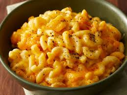

Ingredients
- 2 cups elbow macaroni
- 2 cups shredded cheddar cheese
- 1/2 cup grated Parmesan cheese
- 3 cups milk
- 1/4 cup butter
- 1/4 cup all-purpose flour
- 1/2 tsp salt
- 1/2 tsp black pepper
Requirements
- Large pot
- Skillet
- Whisk
- Spatula
- Knife
- Cutting board
Description
- Cook macaroni according to package instructions. Drain and set aside.
- In a skillet, melt butter over medium heat. Stir in flour and cook for 1 minute.
- Gradually whisk in milk and cook until thickened.
- Stir in cheddar cheese, Parmesan cheese, salt, and black pepper until cheese is melted and sauce is smooth.
- Add cooked macaroni to the cheese sauce and stir to coat.
- Serve hot.